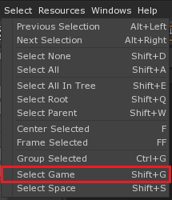
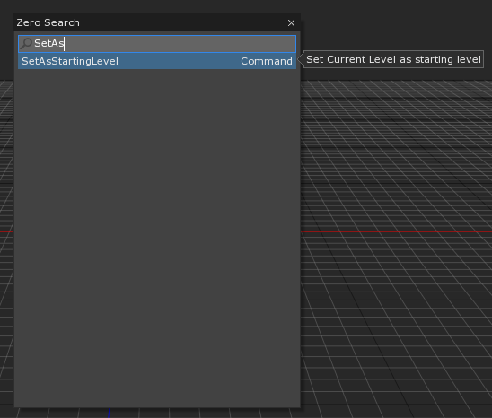
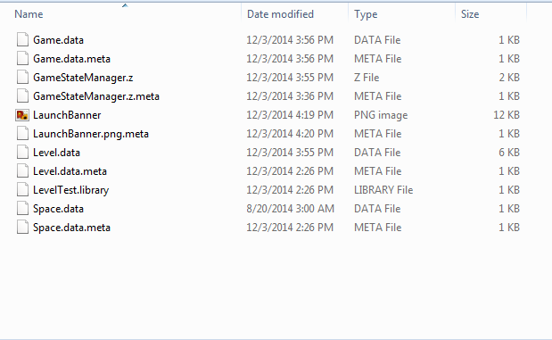
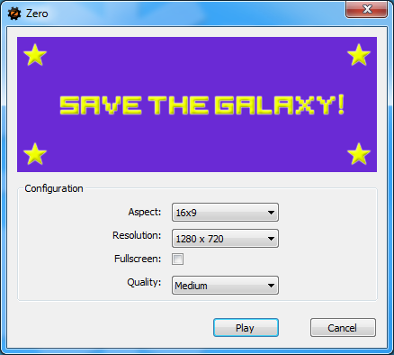
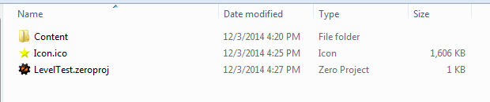

Game Application and Exporting
Exporting is the process of converting your project into a single playable executable. This process is used to create the final build of your game but can also be useful for creating Playtest builds.
Setting a Starting Level
By default, Zero will set the auto-generated ‘Level’ as the starting level but that can be changed by:
- Select the Game Session (Shift + G) or Select->GameSession
- Under the DefaultGameSetup component, change the StartingLevel to the desired one

OR
- Select the level that you want to be the starting one (Library->Level->MyStartingLevel)
- Run the Command : SetAsStartingLevel

Custom Launch/StartUp Banner
To give your exported game a custom start-up banner:
- Add a SpriteSource to your project with the name “LaunchBanner”.
- Its size must be 400 x 150 pixels.

When you export your game, your new banner will replace the default one.

Custom Game Icon
To give your exported game a custom icon:
- Create a .ico image file using a tool or website (we recommend converticon)
- Place in the same directory as your project file (Command: ShowProjectFolder)
- Rename it to: Icon.ico

Export your game and your new icon will replace the default.
Handling Escape Event
By default, Zero will map the Escape key to close the game application instantly. To prevent that, use the following steps:
- Create a Zilch Script called GameStateManager and attach it to your Level Settings object
class GameStateManager : ZilchComponent
{
function Initialize(init : CogInitializer)
{
Zero.Connect(this.GameSession, Events.GameRequestQuit, this.OnGameRequestQuit);
}
function OnGameRequestQuit(event : GameEvent)
{
event.Handled = true;
}
}
Now, Zero will no longer close the application when Escape is pressed. In Editor you can still use the StopGame button (F8) to close the game tab, but on the exported version you’ll need to close the application through some other means. (Usually by offering a pause menu with an option to quit the game)
Handling Focus Change Events (Alt + Tab)
Similarly to handling Escape events, you may want to do special logic (such as pausing the game) when the users loses or regains focus of the application. You can accomplish that by connecting to the following events:
Zero.Connect(this.GameSession, Events.GameFocusOut, this.OnGameFocusOut); //When focus is lost
Zero.Connect(this.GameSession, Events.GameFocusIn, this.OnGameFocusIn); //When focus is regained
You can connect to these events from any object but we recommend doing it from a script attached to a persistent object (such as LevelSettings). The GameStateManager script we wrote earlier would work really well for this.
Changing Resolutions and Fullscreen mode
In addition to setting the resolution at launch, you can set the game’s resolution or its fullscreen mode by using the following function:
var fullscreen : Boolean = true;
var resolution : Real2 = Real2(1280, 720);
this.GameSession.ChangeResolution(fullscreen, resolution);
Warning
Some combinations of resolutions/fullscreen mode might produce jarring visual effects. Make sure to test them thoroughly.